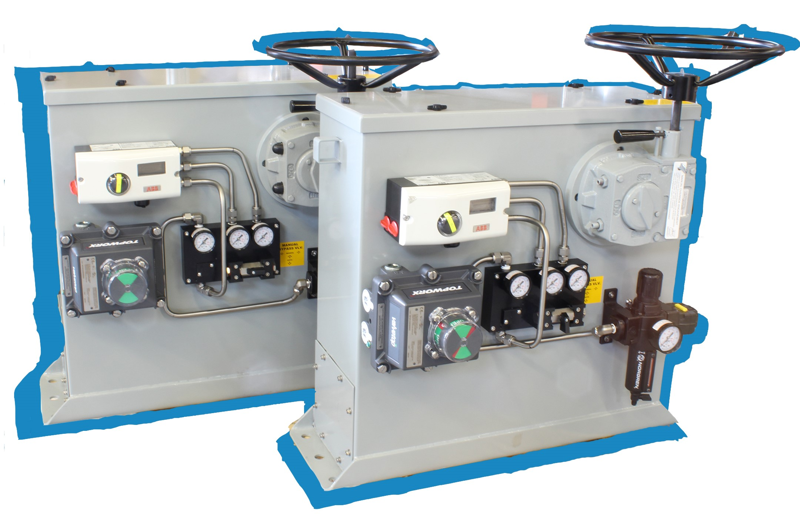
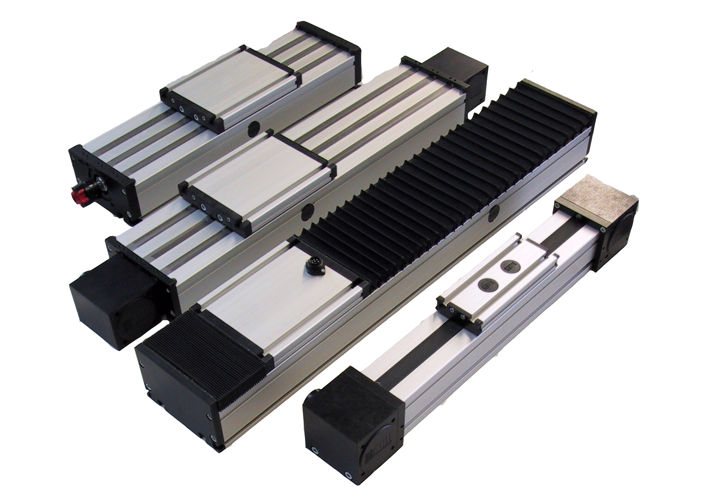

Founded in 1991, CPI Automation prides itself in offering more to its customers than simply a comprehensive line of components. CPI has the ability to design and build finished and application‐ready Mechanical, Fluid Power, and Control Systems.

Introducing BAHR Modultechnik’s New Line of Linear Actuators Linear axes and complex multi‐axis systems are indispensable in today’s industrial world, and they play an increasingly significant role in machine construction. To ensure that you can continue to meet your challenges to your customers’ complete satisfaction in future, we provide products in all industries.